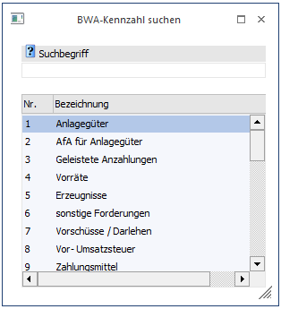
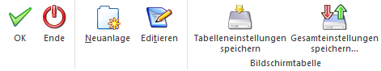

Durch Drücken der F9-Taste oder Anklicken des Lupen-Symbols auf einem BWA-Feld wird der BWA-Matchcode gestartet. Der Suchbegriff kann direkt im Feld "BWA-Nr." eingegeben werden, wobei als Suchbegriff die BWA-Bezeichnung (oder ein Teil davon) herangezogen wird.
Die Suche nach vorhandenen BWA-Kennzahlen wird durch Drücken des Buttons "Anzeigen" bzw. der Taste F5 ausgelöst. In der Tabelle werden anschließend alle gefundenen Einträge angezeigt.
Der gewünschte Datensatz kann mit der RETURN-Taste einfach in die Eingabemaske übernommen werden.

Buttons

Ø Ok
Durch Anklicken des "Anzeigen"-Buttons bzw. der F5-Taste wird die Suche ausgelöst.
Ø Ende
Durch Drücken des Buttons "Ende oder der ESC-Taste wird das Fenster geschlossen und es wird kein Datensatz übernommen.
Ø Neuanlage
Durch Anklicken des Buttons "Neuanlage" kann eine neue BWA angelegt werden, wobei man automatisch in das entsprechende Stammdatenfenster gelangt.
Ø Editieren
Durch Anklicken des "Editieren"-Buttons kann die BWA, die in der Matchcode-Tabelle aktiviert wurde, editiert werden.
Ø Tabelleneinstellungen speichern
Die Spalten einer Tabelle können grundsätzlich an beliebige Positionen verschoben, bzw. in der Breite entsprechend angepasst werden. Durch Anwahl des Buttons "Tabelleneinstellungen speichern" werden die Einstellungen benutzerspezifisch gespeichert und bei dem nächsten Aufruf des Programmpunktes wieder vorgeschlagen.
Ø Gesamteinstellungen speichern
Im Gegensatz zu "Tabelleneinstellungen speichern" können mit "Gesamteinstellungen speichern" mehrere Tabellenaufbauten gespeichert und nach Wunsch geladen werden. Zusätzlich werden Sonderfunktionen der Tabelle (z.B. "Spalte gruppieren") ebenfalls bei der Speicherung bedacht.